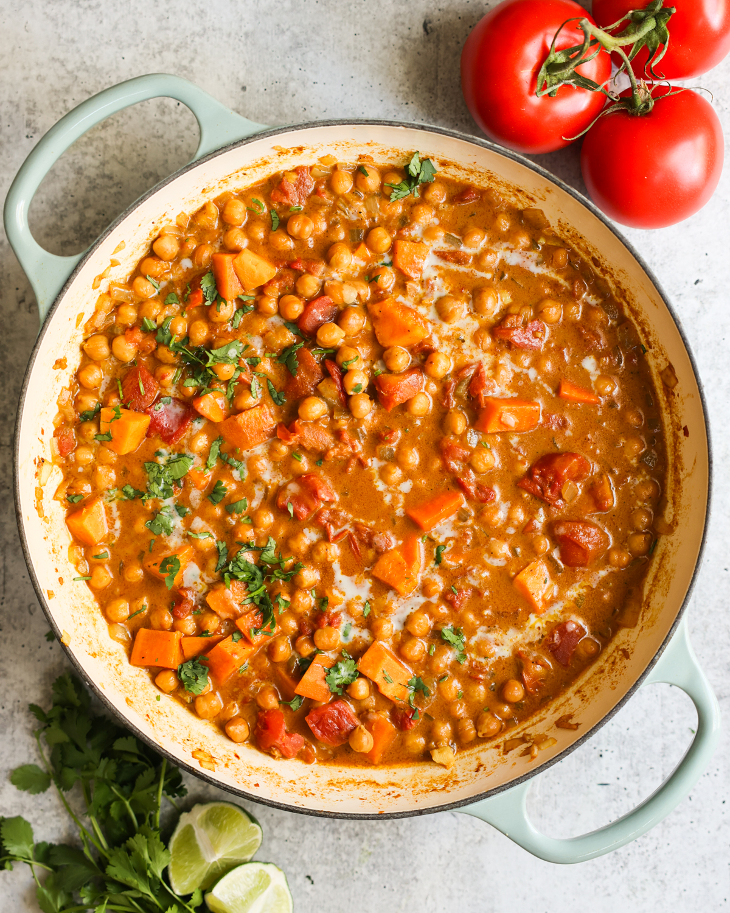

Sweet Potato Chickpea Curry

Description
Hearty, rich, and bursting with warm, fragrant spices, this Sweet Potato Chickpea Curry is both comforting and nourishing. Creamy coconut milk wraps around tender sweet potato cubes and protein-packed chickpeas, creating a plant-based dish that’s ready in just a few simple steps and perfect for any weeknight meal.
Versatile and satisfying, this curry invites easy personalization—add leafy greens like spinach, adjust spice levels to your taste, or toss in extra veggies for variety. Ideal for meal prep, it reheats beautifully and lets the flavors deepen overnight, making leftovers a delicious second act.
Ingredients
- Chickpeas: Grab two cans of these beans and drain and rinse them well. If desired, you can also cook dried chickpeas.
- Sweet Potatoes: For sweetness, heartiness, and nutrition. You need just 1 medium sweet potato. I recommend Jewel or Garnett sweet potatoes with firm skin that are heavy for their size. Peel it and cut into 1/2-inch cubes.
- Aromatics: Yellow onion, minced garlic, and minced ginger add warmth and nuttiness, laying a delicious foundation for the spices. If needed, you can use white onion. I recommend fresh minced garlic and ginger but bottled can substitute in a pinch.
- Garam Masala: This fragrant, sweet, and full-bodied spice blend adds signature Indian curry flavor. I recommend using a high-quality brand if possible for the best chickpea and sweet potato curry.
- Curry Powder: Made with turmeric base, curry powder gives this dish a earthy base.
- Other Spices: Ground cumin, salt, and pepper enhance the curry seasonings.
- Canned Tomatoes: One 14 oz can of diced tomatoes adds a natural, jammy sweetness to the vegan curry. If needed, you can also use 3 diced fresh tomatoes.
- Coconut Milk: Adds richness and a creamy finish. I always recommend using full fat milk, though light works if needed.
- Lime Juice & Cilantro: Fresh juice and shopped citrusy herbs garnish the vegan coconut curry, balancing the aromatics and spices.
Steps
- Sauté Aromatics. Heat the oil in a large skillet or pot over medium heat. Once the oil is hot, add the onion, garlic, and ginger. Sauté, stirring frequently, for about 4 minutes, until the onions are translucent.
- Add Spices. Add the garam masala, curry powder, and cumin to the pot. Do not stir it right away. Allow the spices to toast with the aromatics for 30 seconds before stirring.
- Cook Tomatoes. Add the diced tomatoes and stir. Cook for 5 minutes, until the tomatoes have softened and lost their shape.
- Add Vegetables Stir in the chickpeas, coconut milk, sweet potato, salt, and pepper.
- Simmer. Stir the sweet potato and chickpea curry well and bring it to a simmer. Cook for 20-25 minutes or until the sweet potatoes are tender.
- Season and Serve Add the lime juice (if using) and season to taste with salt and pepper. Serve the curry hot with brown rice or vegan naan and garnish with fresh cilantro.
Home